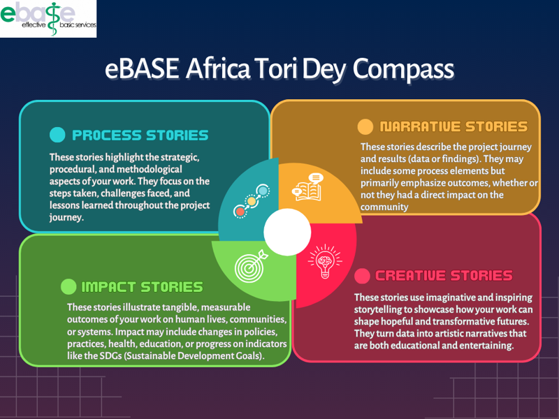

Email:
Country:
Organization or Institution:
What do you want the story to be about?
No response
The approach and methodology we employed/the way we did our work
The way we worked and the results
The impact of our work on People’s lives
How scientific data can elicit artistic creativity
Submit